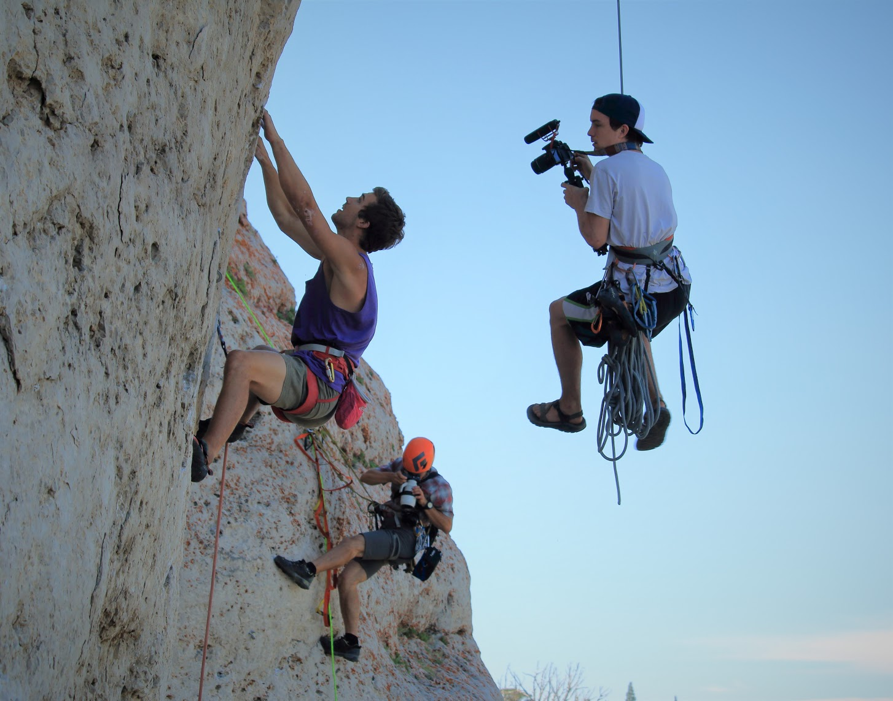

<!DOCTYPE html>
<html lang="en" dir="ltr">

<head>
  <meta charset="utf-8">
  <link rel="stylesheet" href="master.css">
  <title></title>
</head>

<body>
  <div class="cuadro_principal">
    <section>
      <aside class="B_arriba">
        <h1 class="titulo">Titulo de sección</h1>

      </aside>
      <aside class="B_medio">
        <h1 class="F_medio_H1">Sobre el autor</h1>

        
        <p class="F_medio">La escalada, es una actividad que consiste en realizar ascensos sobre paredes, valiéndose de la fuerza física y mental propia. Se considera escalada todo ascenso ya sea fácil, difícil o imposible de realizar (según el
          estado físico de la persona) con las extremidades inferiores (pies y piernas; en algunos casos también se podría llegar a utilizar la rodilla, por si hubiera alguna pared al lado) y las extremidades superiores (brazos y manos). En la
          escalada hay alturas que implican un peligro considerable y con el objetivo de tener seguridad se utiliza equipo de protección.

          En origen, la escalada aparece como una actividad derivada del montañismo. Entonces se consideraba solo como un medio de entrenamiento para los recorridos de montaña. Fue en el siglo XIX cuando la actividad nació en Alemania del Este
          (Dresde) y en Inglaterra (el distrito de los Lagos).

          A lo largo de un siglo, el material evolucionó al ritmo de las actuaciones de los escaladores y a la inversa. Las vías de dificultades crecientes aparecieron con los tiempos: 1913, nivel 5 ; 1917, nivel 6 ; 1970, nivel 7 ; 1983, nivel 8 ;
          1991, nivel 9... La existencia de rocódromos a partir de los años 1960 dio un auténtico empuje a la evolución de la disciplina.

          La escalada se considera, a menudo, como un deporte de riesgo, aunque conviene distinguir diferentes prácticas. Habitualmente, se practica con un equipo que permite evolucionar con seguridad, pero existe una práctica más extrema llamada
          "solo integral", donde el escalador evoluciona sin ninguna seguridad. Esta práctica en particular ha sido popularizada por las películas de Jean-Paul Janssen, La vie au bout des doigts ("La vida en la punta de los dedos", 1982) y Opéra
          Vertical, en las que Patrick Edlinger evoluciona en solitario en sitios como los faros de Buoux y las Gargantas de Verdon.</p>
        <div class="cuadro_tabla">
          <div class="botton_2">
            <button onclick="javascript:location.href='principal.html'">Seccion 1</button>
          </div>
          <div class="botton_2">
            <button onclick="javascript:location.href='principal.html'">Seccion 2</button>
          </div>
          <div class="botton_2">
            <button onclick="javascript:location.href='principal.html'">Seccion 3</button>
          </div>
          <div class="botton_2">
            <button onclick="javascript:location.href='principal.html'">Seccion 4</button>
          </div>
          <div class="botton_2">
            <button onclick="javascript:location.href='principal.html'">Seccion 5</button>
          </div>
          <div class="botton_2">
            <button onclick="javascript:location.href='principal.html'">Seccion 7</button>
          </div>
          <div class="botton_2">
            <button onclick="javascript:location.href='index.html'">Salir</button>
          </div>
        </div>

      </aside>
      <aside class="B_abajo">
        <p>Victor ruben</p>
      </aside>
    </section>

  </div>

</body>

</html>
